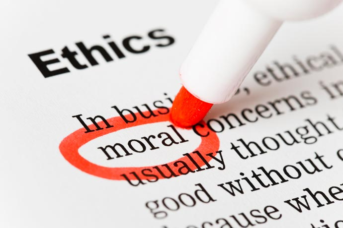
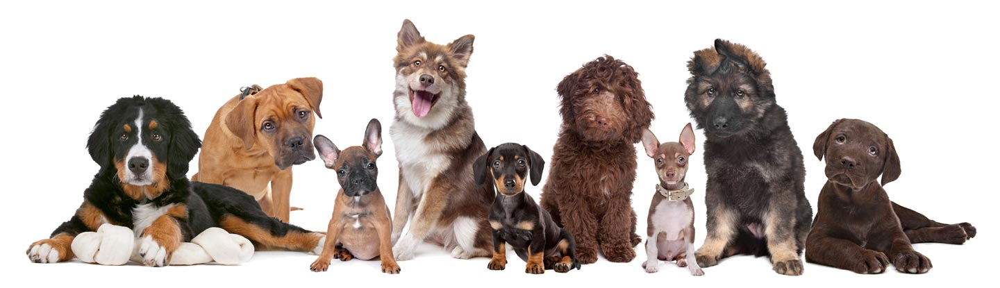
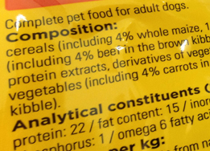
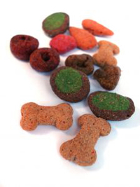

"The greatness of a nation and its moral progress can be judged by the way its animals are treated" - Mahatma Gandhi
When we think about feeding our beloved companions, what questions should we ask ourselves? Certainly, many of us consider the age and health of our dogs, as well as workload and specific purpose, when selecting an appropriate diet. The food we place in our dog's bowl, is the finished product from a chain of commercial enterprise which stand to gain, or not as the case may be, from our choice in pet food. This article will introduce and consider the moral arguments of "ethical stakeholders" who directly relate to the production, marketing, purchase and consumption of commercial dog foods. Please enter with an open mind, remember morals differ from person to person, we all have very different views and opinions.
What are Ethics?
Ethics are generally applied using a moral reasoning model; who, and how many, will benefit/suffer from my decision (Utilitarianism)? Are my actions truthful and honest (Deontology)? Will the ends justify the means (Consequentialism)?
Gandhi, an astute vegetarian and pacifist, suggests that humans have a moral obligation to treat animals fairly, ultimately reflecting humanity within our own societies. But how do we make moral decisions? Morality is considered an anthrocentric (human centred) trait, in which we all have obligated duties towards those which perhaps are incapable of making those judgements considered to be "moral". Morality itself is ambiguous, moral codes are often dependent on social and economic factors such as religion, tradition and personal affluence, which vary greatly throughout different cultures and geographical location.
It is argued that non-Human animals lack the ability to make "moral" decisions therefore human caregivers are tasked with the responsibility of applying ethical decisions to those situations and circumstances in which animals stand to gain or, more often than not, suffer.
Analysing these key aspects of ethical decision making is often ambiguous and morality is far from simple when applied to every day decisions and actions let alone those which may have an impact on a national or global scale. When was the last time you popped to the supermarket and considered the moral or ethical implications of your choice in dog food? When we consider the ingredients, manufacturers, as well as our personal choices, the water becomes a little clouded. The honest answer here will more than likely be that we expect those who manufacture, produce and retail consumable products to be moral in their actions, therefore supplying an ethical product to informed members of the public.

Manufacture and Ingredients
Generally those ingredients used in dog food are category three animal by-products, which can include; blood, hide; hair, feathers and day old chicks. These by-products are generally from those animals which are slaughtered in the UK which has strict welfare regulations however, ingredients included in pet food can also be imported from outside of the UK where perhaps welfare standards are not as regulated. The animal by-product industry raises essential revenue in the U.K, with one company reporting to generate an income of £250 million year per annum. Animal by-products, are not only used in our pet food, and are often utilised by other industries including those which produce and manufacture pharmaceuticals. In the UK 75% of marine catch is classed as by-catch, those products which are not utilised by the human food industry, meaning that those included in our pet food is utilised rather than wasted.
"....Using animals for food is an ethical thing to do, but we've got to do it right....we owe the animal respect" - Temple Grandin
By-products utilised in the pet food industry are those pieces of slaughtered animal which are not generally desirable for the human dinner plate. In the UK, 900 million animals are farmed including those which are reared using intensive systems. The estimated UK human population is estimated at 64.1 million (2014), despite the number of farmed animals greatly outweighing the human population, intensive farming continues, perhaps not encompassing the spirit of utilitarianism (the greatest happiness for the greatest number). 2% of food produced in the UK bears the RSPCA logo to illustrate high animal welfare standards, therefore humans continue to purchase food which has perhaps not been reared to fully consider the Five Freedoms (freedom from hunger and thirst, pain, injury and disease, fear and distress and the freedom to express normal behaviour).
Dog food is often manufactured using a process known as rendering. Rendering involves the heating of ingredients and removing the resulting solid materials. Rendering is generally a financially viable process, meaning the cost of rendered by-products creates a solid food which is ultimately cheaper for the consumer. Rendering however produces high levels of methane which will have a direct effect on the environment and climate change.
Have you looked at your dog food label recently? Those of us which consider the diets of our dogs very carefully will consider particular nutritional levels (e.g. protein) however it is not a legal requirement in the UK to disclose particular ingredients in our companion's food, phrases such as "meat derivative" and "oils and fats" are used to describe ingredients such as blood, bone and sinew (connective tissues). Those foods labelled 100% organic are also misleading, as only 95% of the ingredients must be classified as organic to advertise your brand as wholly organic.
Food labelling for farmed animals is much stricter and the composition of all meat farmed animal feeds must contain a full and correct list of ingredients. Evaluate this ethically.....those animals which are reared for the meat industry, and our tables, must receive feeds in which all ingredients are clearly listed however those which are fed to our companion animals (except rabbits and horses; as these can be used for food too!) can be unclear and less precise. There are many pieces of scientific research which have obtained concerning results in regard to dog food ingredients, a study in Canada found that 10 out of 12 foods tested contained undisclosed mammal, fish and bird ingredients. Other research has discovered the presence of flame retardant compounds in dry dog food, I am guessing this was not disclosed on the label.
Any of you reading this that have considered animal welfare or indeed researched this matter in some detail will understand the concern that many people have for large scale animal farming, including those used in the dairy industry. What implications does the dairy industry have on our dog food? There are many brands of dog food in the UK (one search displayed 903 results for dry dog food!) some of which have sparked large scale debates, and have large shares in both the dairy and cosmetic industry. That is all I have to say on that matter, although an internet search should bring up further information on this topic.
Human Consumer
24% of homes in the UK have a dog. Humans choose to keep dogs for a variety of reasons; they are attachment figures, companions, care-givers and objects of status. Anecdotal evidence, as well as recent television programming, suggests that the relationship we have with our dog will affect the way in which we feed our animals. A working dog, for example, will be fed according to individual work level whereas grandma's favourite pooch is more likely to indulge in afternoon cream cakes. In the UK, it is more likely that dogs that have owners which are considered "overweight" will also have weight related issues, leading to a higher risk of diabetes and musculoskeletal dysfunction.
Personal affluence will have a direct influence on an owner's choice in dog food. Prices of dog food range from approximately £11 to £70 for 15kg. The biggest proportion of homes containing dogs are within the North-East (36% of homes), this region is considered one of the most "financially deprived area(s)" in the UK (Church Urban Fund, 2014). With the continuous rise in the cost of living, it could be assumed that these areas have perhaps limited access to transportation therefore limiting access to a wide range of commercial dog foods. Therefore the "Big Brands" become more accessible due to their tireless advertising and abundant availability. The same could be said for some of the more expensive "Therapeutic Diets" which are specially designed for particular dietary needs of animals who may have issues directly relating to age or health. Is it ethical that the price is so high on foods which will help with specific health issues? Or is it ethical that we are perhaps led to believe that our canines have a better quality of life when fed therapeutic (and more expensive) diets?
"With no ads, who would pay for the media? The Good Fairy?" - Samuel Thurm
We have already touched upon the ambiguity of pet-food labelling and what the limitations of this may be. The consumer (dog owners in this case) are often influenced by packaging of foods, those which show happy, healthy dogs or vegetables and palatable ingredients are more likely to be purchased than those which are simply an ingredient label on a clear bag because they are more aesthetically pleasing without actually having any real reflection on product quality. The same can be said here for the power of advertising, research has shown that humans watching television advertising which contains our four legged friend will have a positive influence on the attitude of a dog owner making them more likely to purchase the product being showcased (I am thinking of one particular slogan and advert here......I will leave you to think of your own). Large scale, international, multi-million companies are those who can afford advertising, rather than small scale, local dog food producers who may have a product which surpasses those which are churned out in bulk (or not.....I can only surmise!).
Feeding our dogs is something we may do twice a day, and I doubt that many of us consider the entire commercial pet-food industry and its actions as we pop Fido's biscuits into his dish. What should be considered here is whether we, as owners, are making informed decisions when feeding our dogs. Do we know whether our food is appropriate for the dog and their individual needs? Are we putting our dogs at risk of food related illness or behavioural problems?
Humans have a moral responsibility towards animals. Many of us would agree with this statement in relation to our pet animals that provide their companionship, comfort and services to us humans. Humans naturally will consider the welfare of their pet over a farmed animal, for example. Cognitive dissonance allows us to disassociate from the manufacture of live ingredients to dry biscuits or minced products to feed our beloved four legged friend. Manufacturers use clever advertising to influence the choice of the consumer, despite the sometimes questionable morals of multi million pound companies who never see their consumer but only the balance sheet at the end of the month. Utilitarianism applies moral decisions to those of the greatest number, except when the highest number is that of "ingredient status". Deontology applies moral truth telling and honesty, unless this affects your annual turnover and the rate at which you are selling products. Consequentialism is the moral justification of the ends justifying the means, so does unhappiness for the greatest number and bending the truth justify the ultimate happiness of the consumer?
As responsible and informed consumers we have the chance to positively influence the world around us, beginning with those who have no voice, who cannot object or argue their case. Be the person your dog thinks you are.
About the author
Dog trainer, prize winning animal science graduate, holder of a host of canine psychology, behaviour and nutrition qualifications, dog rescue volunteer and owner of three beautiful dogs, Emma is your all-round dog-nut.
Based in North Wales, Emma is currently working towards her KCAI accreditation (Kennel Club Accreditation Scheme for Instructors in Dog Training and Canine Behaviour) and has a keen interest in agility, working trials and other trialling events as well as being an active member of Cheshire Canine Services' dog display team.
Emma lectures and provides practical training demonstrations in animal learning and training, welfare and health. Emma hopes to gain her PGCE teaching qualification and continue her academic career to PhD level in the near future.
References
Aronson, E.L., Allison, S.D., Heiliker, B.R. (2013). "Environmental Impacts on the Diversity of Methane Cycling Microbes and their Resultant Function". Frontiers in Microbiology. Vol.4, August. Pp.225.
Beloshapka, A.N., Duclas, L.M., Vester-Boler, B.M., Swanson, K.S. (2012). "Effects of Inulin or Yeast Cell Wall Extract on Nutrient Digestibility, Fecal Fermentative End Product Concentrations, and Blood Metabolite Concentrations in Adult Dogs Fed Raw Meat Based Diet". American Journal of Veterinary Research. Vol.73, No.7, July. Pp.1016-1023.
Bentham, J. (1983). The Collected Works of Jeremy Bentham: Deontology. Together with a Table of The Springs of Action and the Article on Utilitarianism. Clarendon Press, Gloucestershire, UK.
Case, L., Daristotle, L., Hayek, M.G., Raasch, M.F. (2011). Canine and Feline Nutrition: Third Edition. Elsevier Inc., Missouri, USA.
Castle, P., Robertson, J.S. (2008). "Animal Sera, Animal Sera Derivatives and Substitutes Used in the Manufacture of Pharmaceuticals". Biologicals. Vol.26, Issue 4, December. Pp.365-368.
Church Urban Fund. (2014). Poverty In England. Available From: www.cuf.org.uk. [Electronically Accessed: 11th November, 2014].
DEFRA. (2011). Control on Animal By-Products: Guidelines on Regulation (EC) 1069/2009 and Accompanying Regulations (EC) 142/2011, Enforced in England by the Animals By-Products (Enforcement)(England) Regulations 2011. November. Available From: www.gov.uk. [Electronically Accessed: 3rd November, 2014].
Degeling, C., Kerridge, I., Rock, M. (2013). "What to Think of Canine Obesity? Emerging Challenges to our Understanding of Human-Animal Health Relationships". Social Epistemology: A Journal of Knowledge, Culture and Policy. Vol.27, Issue 1, April. Pp.90-104.
Dilitzer, N., Becker, N., Kienzle, E. (2011). "Intake of Minerals, Trace Elements and Vitamins in Bone and Raw Fed Rations in Adult Dogs". British Journal of Nutrition. Vol.106, October. Supplement One. Pp.553-556.
Dryden, G. (2008). Animal Nutrition Science .London, Cambridge University Press.
European Commission. (2002). Overview of Results of a Series of Missions to Evaluate Controls of Animal Wefare on Farms in Seven Member States, Carried out Between June 2001 - June 2002. Available From: www.ec.europa.eu. [Electronically Accessed: 17th November, 2014].
Finley, R., Reid-Smith, R., Ribble, C., Popa, M., Vandermeer, M., Aramani, J. (2008). "The Occurance of Antimicrobial Susceptibility Salmonellae Isolated from Commercially Available Canine Raw Food Diets in Three Canadian Cities". Zoonosis and Public Health. Vol.55, Issue 8, October. Pp.462-469.
Food Standards Agency. (2010). Pet Food - A Note on the Legislation. Available From: www.food.gov.uk. [Electronically Accessed: 3rd November, 2014].
Freeman, L.M., Chandler, M.L., Hamper, B.A., Weeth, L.P. (2013). "Current Knowledge About the Risks and Benefits of Raw Meat Based Diets for Dogs and Cats". Journal of the American Veterinary Medical Association. Vol.243, Issue 11. Pp. 1549-1558.
Girginov, D. (2007). 'Evaluation and Use of Dog Food'. Trakia Journal of Science. Vol.5, No. 3-4. Pp. 51 - 55.
Hayter, A.K.M., Draper, A.K., Ohly, H.R., Rees, G.A., Pettinger, C., McGlane, P., Watt, R.G. (2013). "A Quantitative Study Exploring Parental Accounts of Feeding Pre-School Children in Two Low-Income Populations in the U.K.". Maternal and Child Nutrition. Only Available From: www.wiley.com. [Electronically Accessed: 21st November, 2014] .
Hill's Pet Food Nutrition. (2014). How to Strike the Right Balance for Your Dog: Ingredients in Dog Food. Available From: www.hillspet.com. [Electronically Accessed: 7th March, 2014].
Kravanja, Z., Cucek, L. (2013). "Multi-Objective Optimisation for Generating Solutions Considering Total Effects on the Environment". Applied Energy. Vol.101, January. Pp.67-80.
Lancendorfer, K.M., Atkin, J.L., Reece, B.B. (2008). "Animals in Advertising: Love Dogs? Love the Ad!". Journal of Business Research. Vol.61, Issue 5, May. Pp.384-391.
Mayfield, L.E., Bennet, R.M., Tranter, R.B., Woodridge, M.J. (2007). "Consumption of Welfare-Friendly Food Products in Great Britain, Italy and Sweden, and how it may be Influenced by Consumer Attitudes to and Behaviour Towards, Animal Welfare Attributes". International Journal of Sociology, Food and Agriculture. Vol.15, Issue 3, December. Pp.59-73.
Mead, G.H. (1938). The Philosophy of the Act. The University of Chicago Press, Chicago, USA.
Moses, V., Fischer, S. (2013). "Consumer Choice". Socio-Economic Considerations in Biotechnical Regulation Natural Resource Management and Policy. Vol. 37, December. Pp.67-79.
Orr, R.J., Tallowin, J.R.B., Griffith, B.A., Rutter, S.M. (2013). "Effects of Livestock Breed and Rearing Experience on Foraging Behaviour of Yearling Beef Cattle Grazing Unimproved Grasslands". Grass and Forage Science. Vol.109, Issue 1, March. Pp.90-103.
Pet Food Manufacturers Association. (2014). Regional Pet Population. Available From: www.pfma.org.uk. [Electronically Accessed: 11th November, 2014].
Pets at Home. (2014). Dry Dog Food. Available From: www.petsathome.com. [Electronically Accessed: 12th November, 2014] .
Pitk, P., Kaparaju, P., Palatsi, J., Affes, R., Vilu, R. (2013). "Co-Digestion of Sewage Sludge and Sterilised Solid Slaughterhouse Waste: Methane Production Efficiency and Process Limitations. Bioresource Technology. Vol.134, April. Pp.227-232.
Raubenheimer, D., Jones, S.A. (2006). "Nutritional Inbalance in ana Extreme Generalist Omnivore: Tolerance and Recovery Through Complementary Food Selection". Animal Behaviour. Vol.71, Issue 6, June. Pp. 1253 - 1262.
Ricci, R., Granato, A., Vasellari, M., Bescarato, M., Palagiano, C., Andrighetto, T., Diez, M., Mutinelli, F. (2013). "Identification of Undeclared Sources of Animal Origin in Canine Dry Foods Used in Dietary Elimination Trials". Journal of Animal Physiology and Animal Nutrition. Vol.97, Issue Supplement: 1, May. Pp. 32-38.
Riley, G. (2012). Cost Benefit Analysis. Available From: www.tutor2u.net. [Electronically Accessed: 21st November, 2014].
Rustard, T., Storre, I., Slizyte, R. (2011). "Possibilities for the Utilisation of Marine By-Products". International Journal of Food Science and Technology. Vol.146, Issue 10, October. Pp.2001-2004.
SARIA Limited. (2014). Pet Food Ingredients. Available From: www.saria.co.uk. [Electronically Accessed: 17th November, 2014].
Simonson, J.E., Faskeno, G.M., Lillywhite, J.M.(2014). "The Value-Added Dog Food Market: Do Dog Owners Prefer Natural or Organic Dog Foods?" Journal of Agricultural Science. Vol.16, No.6. Pp.86-97.
Venier, M., Hites, R.A. (2011). "Flame Retardants in the Serum of Pet Dogs and in their Food". Envirnomental Science and Technology. Vol.45, No.10, April. Pp.4602-4608.
Wakshlag, J., Shmalberg, J. (2014). "Nutrition for Working and Service Dogs". Veterinary Clinics of North America: Small Animal Practice. Vol.44, Issue 4, July. Pp.719-740.
Webster, A.J.F. (2001). "Farm Animal Welfare: The Five Freedoms and the Free Market". The Veterinary Journal. Vol.161, Issue 13, May. Pp.229-237.
Wills, J., Linnekar, B. (2013). "In-Work Poverty and the Living Wage in the UK: A Geographical Perspective". Transactions of the Institute of British Geographs. Vol.39, Issue 2, April. Pp.182 - 194.
Woiceshyn, J. (2011). "A Model for Ethical Decision Making in Business: Reasoning, Intuition and Rational Moral Principles". The Journal of Business Ethics. Vol.104, Issue 3, December. Pp.311-323.